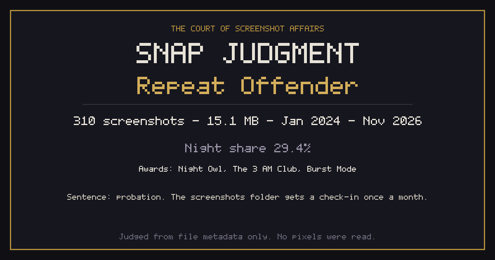
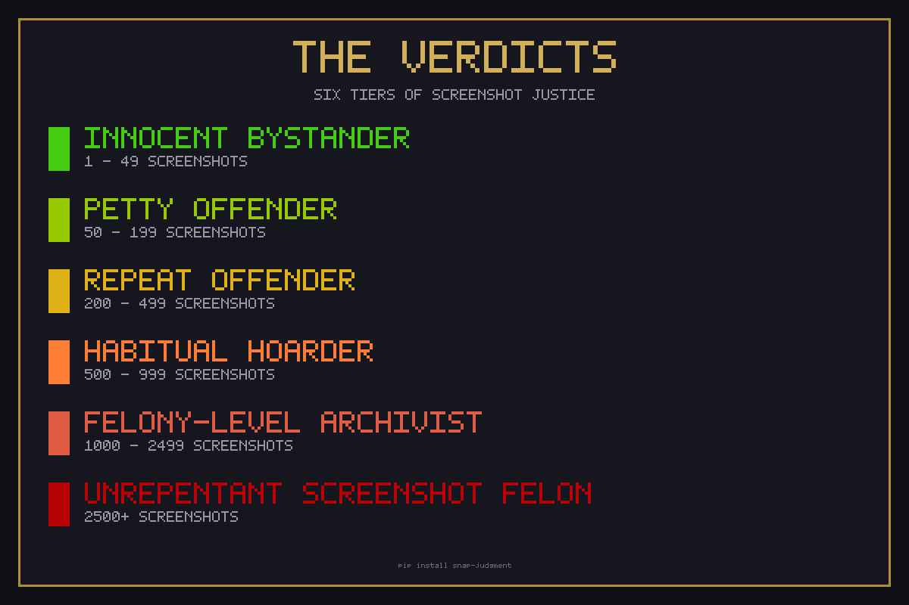
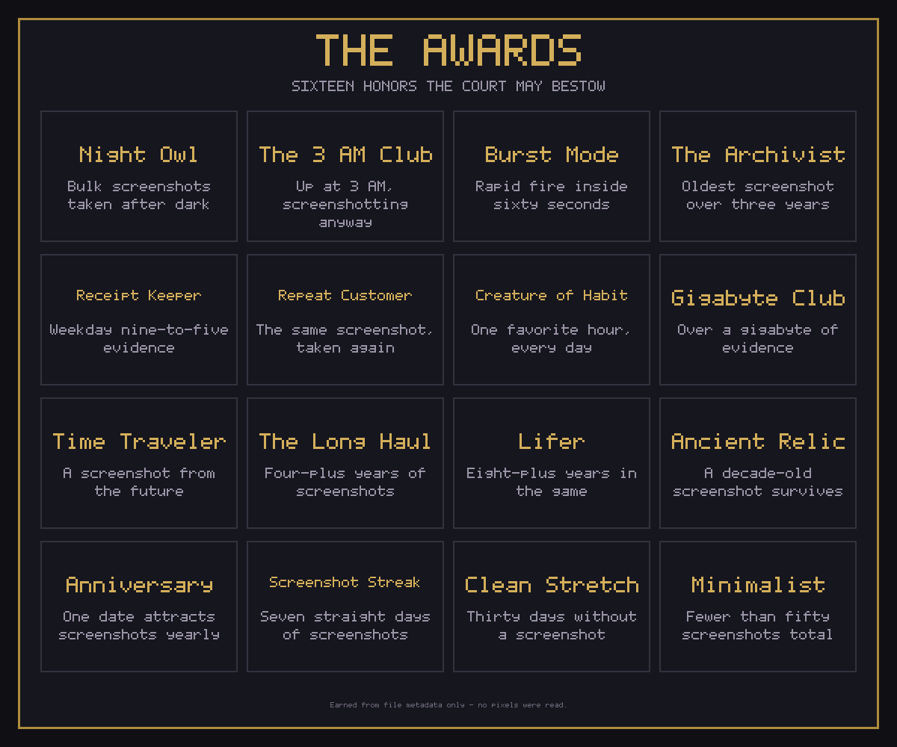
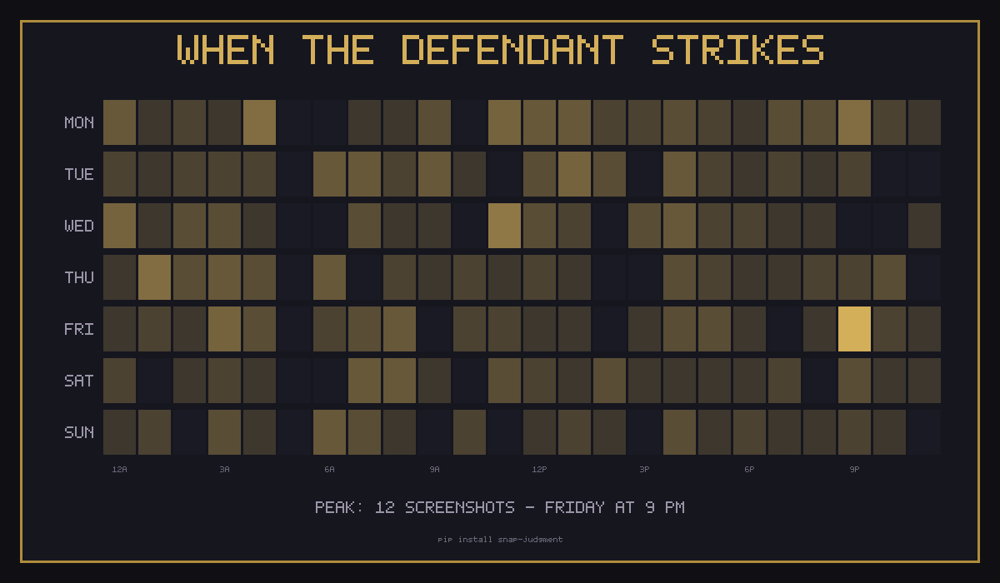
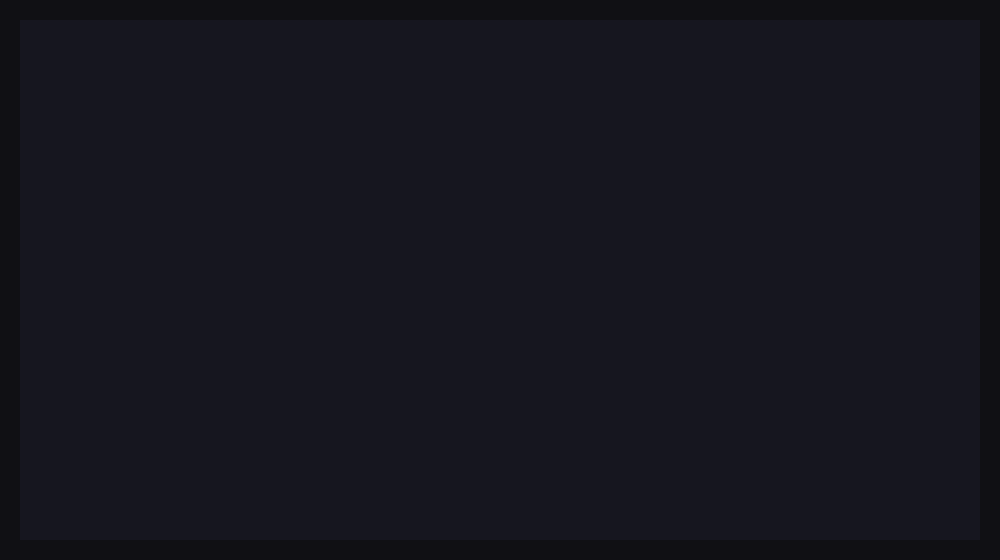

Every phone keeps the receipts. Snap Judgment reads them.
Every screenshot you have ever taken is sitting in a folder, quietly becoming evidence. Snap Judgment reads that folder, locally, on your own machine, and issues a formal courtroom-style verdict on the habit: a tier, the evidence, awards, and a sentence. It works from file metadata only. It never looks at what your screenshots show.

The 1200x630 share card, drawn by the tool itself with a hand-rolled bitmap font. No image library, no mockup.
| Screenshots | Verdict |
|---|---|
| 0 | No Evidence |
| 1-49 | Innocent Bystander |
| 50-199 | Petty Offender |
| 200-499 | Repeat Offender |
| 500-999 | Habitual Hoarder |
| 1,000-2,499 | Felony-Level Archivist |
| 2,500+ | Unrepentant Screenshot Felon |
The court weighs the evidence first: total count and size, the largest single screenshot, date span, busiest day, month and hour, night share, weekend share, how much of the collection is over a year old, streaks, clean stretches, 60-second bursts, duplicate suspects and the storage they waste, formats, your screenshot season, your screenshot anniversary, and the device eras told by your screen resolutions. Your five oldest screenshots are entered as Exhibit A through Exhibit E.
Sixteen awards are on the books. Most hearings earn a few; the court pins every one the evidence supports.
--vs) tries two folders against each other; year over year (--vs-year) tries this year against the last.--plea-bargain): the hypothetical verdict if you deleted your duplicate extras and everything older than two years, computed in full. The court runs the numbers; it never deletes a thing.--rematch) tries this hearing against the last one on record for the same folders: the count delta, and whether the verdict improved, worsened, or held.--since, --until) narrow a hearing to a date range, inclusive, and compose with --year. A bare year works too.--badge): a shields-style SVG of your tier, colored by severity, made for your README.--fail-above, so a verdict can fail a CI build.Five synthetic collections were generated from fixed seeds and judged, so you can read real reports before running your own: The Minimalist (35 screenshots, Innocent Bystander), The Night Archivist (900, Habitual Hoarder), The Burst Photographer (450, Repeat Offender), The Hoarder (2,800, Unrepentant Screenshot Felon), and The Receipt Keeper (220, Repeat Offender). Full reports and cards live in the gallery in the repo.
==============================================================
SNAP JUDGMENT - The Court of Screenshot Affairs
==============================================================
THE VERDICT
Repeat Offender
310 screenshots, 15.1 MB of evidence,
spanning Jan 5, 2024 to Nov 10, 2026.
THE EVIDENCE
Total screenshots 310
Total size 15.1 MB (15,799,537 bytes)
Largest screenshot Screenshot 2024-10-14 at 18.42.19.png (107.3 KB)
Date span Jan 5, 2024 - Nov 10, 2026 (1,041 days)
Oldest screenshot Screenshot 2024-01-05 at 17.59.50.png (Jan 5, 2024)
Busiest day Aug 14, 2026 (13 screenshots)
Busiest month Aug 2026 (28 screenshots)
Busiest hour 9 PM (27 screenshots)
Taken at night (10 PM-5 AM) 91 (29.4%)
Weekend share 67 (21.6%)
Evidence retention 189 over a year old (61.0%)
Screenshots per day 0.3
Median per active day 1.0
Silent months 0
Longest daily streak 10 days
Longest clean stretch 15 days (Jul 3, 2024 - Jul 17, 2024)
Biggest burst 12 screenshots in 60 seconds
Duplicate suspects 1 group, 12 files
Duplicate waste 41.3 KB
Formats PNG 100%
Screenshot season Summer (Jun-Aug) - 31.0%
Screenshot anniversary Aug 14 - 14 screenshots across 2 years
Screen recordings 2
Device eras 2
1170x2532 - 153 shots, Jan 5, 2024 to Aug 5, 2026
1920x1080 - 157 shots, Jul 3, 2025 to Nov 10, 2026
Screenshots per year 2024: 102, 2025: 103, 2026: 105
THE CHARGES
Desktop / landscape 157 (50.6%)
Phone (tall) 153 (49.4%)
EXHIBITS
Exhibit A - Screenshot 2024-01-05 at 17.59.50.png (Jan 5, 2024)
Exhibit B - Screenshot 2024-01-12 at 11.46.18.png (Jan 12, 2024)
Exhibit C - Screenshot 2024-01-17 at 07.08.34.png (Jan 17, 2024)
Exhibit D - Screenshot 2024-01-21 at 22.29.11.png (Jan 21, 2024)
Exhibit E - Screenshot 2024-01-22 at 14.04.37.png (Jan 22, 2024)
AWARDS
* Night Owl - 91 screenshots between 10 PM and 5 AM (29.4% of the total).
* The 3 AM Club - 32 screenshots taken between 2 AM and 4 AM, when nothing on screen can be urgent.
* Burst Mode - 12 screenshots inside a single 60-second window.
* Repeat Customer - 12 files share an exact size and dimensions with a sibling. The same screenshot, taken again.
* Screenshot Streak - 10 consecutive days with at least one screenshot.
THE SENTENCE
Sentence: probation. The screenshots folder gets a check-in once a month.
From a synthetic demo folder of 310 screenshots. Your folder's testimony will differ.
Every exhibit below was drawn by the tool's own standard-library renderer from that same demo folder's numbers: no image library, no mockups. The full set, including an MP4 of the demo and the author's own real verdict card, lives in the media pack in the repo.

The verdicts: six tiers, colored by severity.

The awards: all sixteen honors the court may bestow.

When the defendant strikes: the demo folder peaks Friday at 9 PM, which is where its burst of 12 lives.

The verdict, delivered: the share card assembles itself and the gavel falls.
No AI. No models. No uploads, accounts, or telemetry. Snap Judgment is one Python file of plain arithmetic in the standard library, so every finding can be traced back to the record that produced it. Even the share card's PNG is drawn pixel by pixel with a hand-rolled bitmap font, because a zero-dependency tool does not get to borrow an image library.